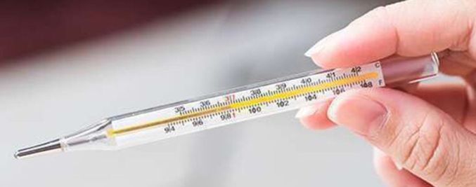

Termômetros clínicos digitais utilizados no controle da temperatura de seres humanos e de animais.
O certificado do TERMÔMETRO na portaria 384, só poderá ser emitido após a obtenção da Portaria de Aprovação de Modelo publicada pelo
Inmetro. [RAC - 6.2.6.1.1]
TERMÔMETRO com COLUNA DE MERCÚRIO.
Proíbido no Brasil ver
RDC n.º 922 de 19/09/2024
